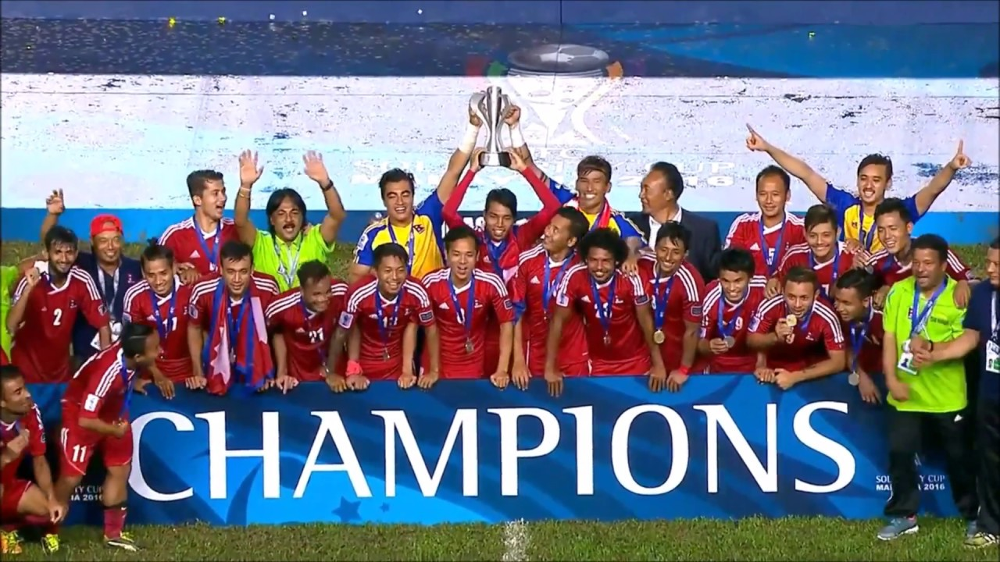
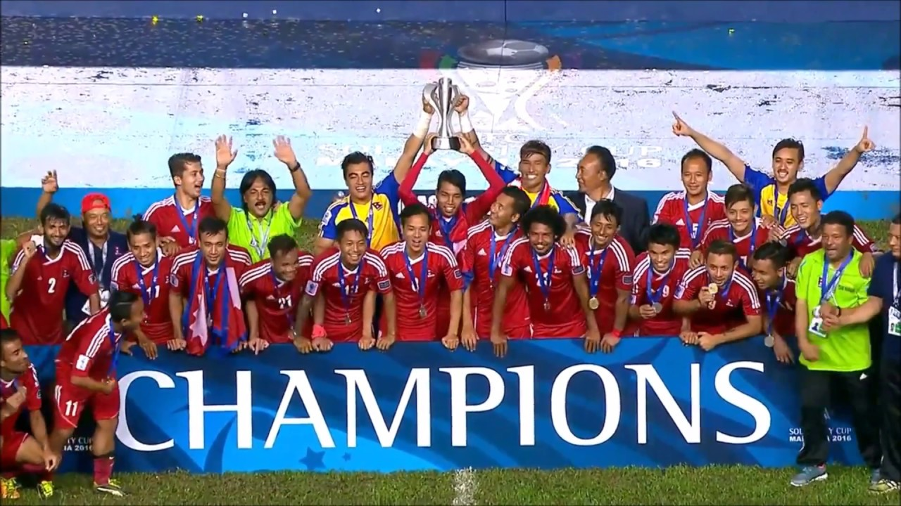

ALL NEPAL CIRCKET ASSOCIATION

Nepal has been reinstated as a member of the International Cricket Council’s (ICC) on a conditional basis. The ICC lifted its ban on the Cricket Association of Nepal (CAN) with effect October 13, 2019. The decision comes as a result of the ICC Board meetings held in Dubai on Monday. Nepal’s cricket governing body was suspended in 2016 after the ICC found that CAN had breached the ICC rule that bars government interference and mandates free and fair elections.
 
